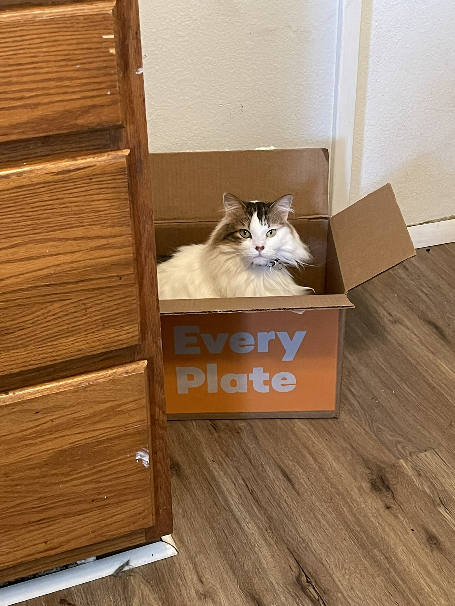
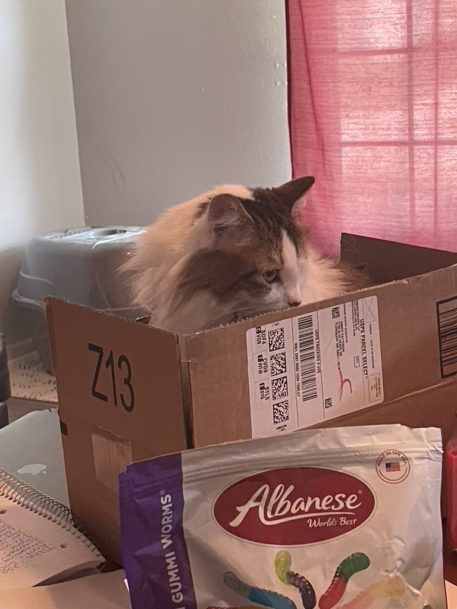
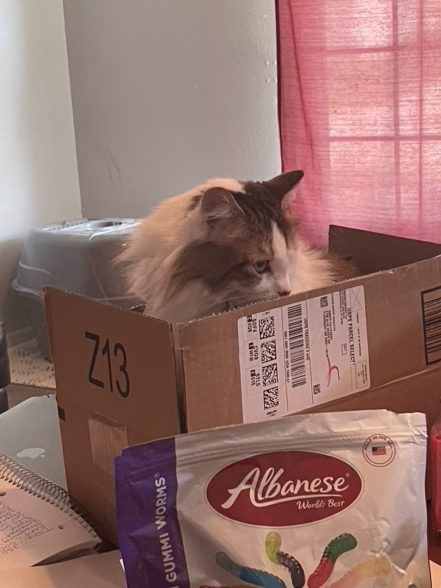
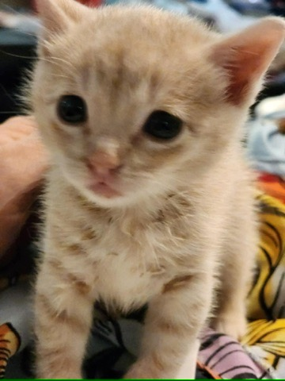

Goose
Here my cat Goose. He is orange and crazy. I got him in 2020, a friend
of mine found a cat in his garage and his whole family is allergic to
cats so he called me. The rest is history.


Lola
Here is my cat Lola. She is a big fan of social distancing. She is a
fan of me but if you don't know her and try to touch, you do so at
your own risk.

 


Megatron
Megatron is technically a friends cat but we recently had to watch him
so I am including him anyway. He got seperated from his mom a little
early so we had to bottle feed him.



Casper
In october last year my church had a halloween event, at the event somebody abandoned Casper.
I called my mom and she ended up adopting her.

Zayne
Casper seemed kind of lonely, so my mom adopted her a friend.


Daisy
Here is my brothers cat Daisy, she is a bit of a scaredy cat.


Billy
Here is Billy.